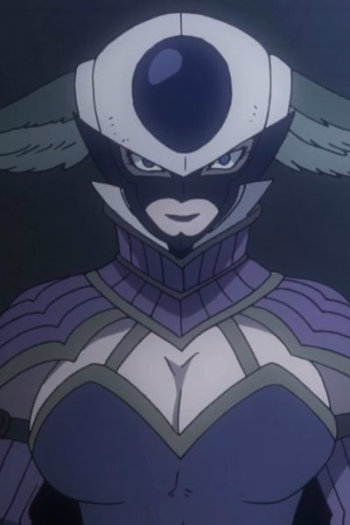

|  |
Kyouka |
|
Kyouda is a member of the Dark Tartarus and the Nine Demon Gates Team. |
 |
Nagi Aiza |
- Your Lie in April
- Your Lie in April OVA
|
Nagi is Kousei first student that he taught piano to. She is a first year middle school student who's studying music. Nagi is the younger sister of Takeshi Aiza. She is stubborn, childish and has a Brother-Complex. She driven to follow his footstep in order to get her brother to notice her. |
 |
Ryoko Sakai |
- Food Wars!
- Food Wars! OVA
- Food Wars! The Second Plate
- Food Wars! The Second Plate OVA
- Food Wars! The Third Plate
|
Ryouko is a student at Tootsuki Culinary Academy and a resident of Polar Star Dormitary. Her culinary focus is Salt Water dishes. She is a roommate and friend to Megumi Tadakoro and Yuki Yoshino. |